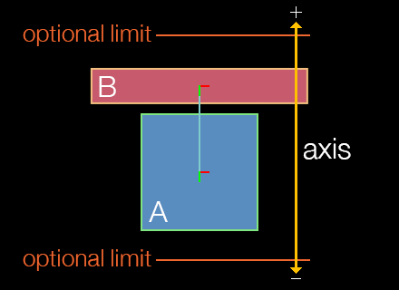
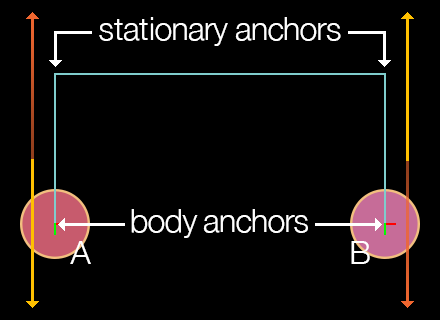
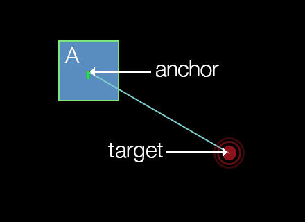
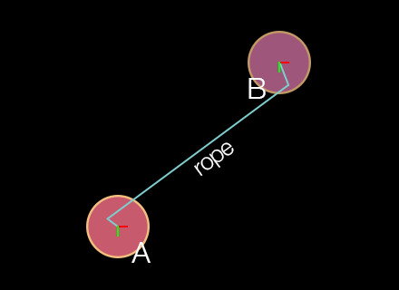

Physics Joints
This guide discusses how to configure the various physical Box2D joints available in Corona.
Overview
Joints can be used to assemble complex physical objects from multiple rigid bodies. For example, joints can be used to join the limbs of a ragdoll figure, attach the wheels of a vehicle to its body, create a moving elevator platform, and more.
Creation and Removal
Most joints are used to connect two rigid physical bodies, so you must create these bodies first and then submit them as arguments to the physics.newJoint() constructor function, along with other properties that vary depending on the joint type (see details below).
physics.newJoint( jointType, ... )
If a joint is no longer needed, you can destroy it by calling either object:removeSelf() or display.remove():
joint:removeSelf()
display.remove( joint )
If one of the joined bodies is destroyed, the associated joint will be automatically destroyed. However, remember to properly remove and nil any references to a joint which has been destroyed.
Pivot Joint
A pivot joint, known as a revolute joint in Box2D terms, joins two bodies at an overlapping point, like two boards joined by a rotating peg. The initial arguments are bodies A and B to join, followed by the x and y coordinates for the anchor point, declared in content space coordinates.
local pivotJoint = physics.newJoint( "pivot", bodyA, bodyB, anchor_x, anchor_y )

If you’re building a complex assembly like a ragdoll with pivot joints and you’re experiencing instability issues, consider setting physics.setContinuous() to true.
Joint Motor
Optionally, object B joined with a pivot joint to object A can be driven (rotated) with a joint motor. This rotation can be either clockwise or motorSpeed value. Note that joint motors have a fairly weak maximum torque by default, so setting motorSpeed may appear to have little visible effect. Therefore, you should generally set maxMotorTorque to a high value such as 100000 if you’re trying to move any significant mass, such as rotating a wheel to power a car.
pivotJoint.isMotorEnabled — This must be set to
trueto enable any motor action on a pivot joint.pivotJoint.motorSpeed — This number value specifies the intended rotational motor speed.
pivotJoint.maxMotorTorque — This number value specifies the maximum allowed torque for the joint motor.
pivotJoint.motorTorque — Read-only number value indicating the current motor torque.
Rotation Limits
Pivot joints can optionally be constrained in their range of rotation. For example, if constructing a ragdoll figure, the head/neck joint would likely have a limited range of angular motion in either the clockwise or
pivotJoint.isLimitEnabled — Set this to
trueto constrain the pivot joint rotation limits.pivotJoint:setRotationLimits() — Function which accepts two values, in degrees, defining the negative and positive limits of rotation. For example, if you want to limit the rotation somewhat tightly in relation to the upward axis (
0), these values may be-10and10respectively. Note that these values remain in relation to the rotation of bodyA, meaning that if bodyArotates after the joint is declared, these rotation limits will remain in rotational synchronization with that body.
pivotJoint.isLimitEnabled = true pivotJoint:setRotationLimits( -20, 20 )
- pivotJoint:getRotationLimits() — Function which returns the current negative and positive rotation limits.
local negLimit, posLimit = pivotJoint:getRotationLimits() print( negLimit, posLimit )
Other
pivotJoint.jointAngle — Read-only number value indicating the current angle of a pivot joint, in degrees.
pivotJoint.jointSpeed — Read-only number value indicating the current rotation speed of a pivot joint.
pivotJoint.referenceAngle — Read-only number value indicating the joint angle between the bodies at time of creation.
Distance Joint
A distance joint attaches two bodies at a fixed distance. The initial arguments are bodies A and B to join, followed by an x and y anchor point coordinate for each body, declared in content space coordinates.
local distanceJoint = physics.newJoint( "distance", bodyA, bodyB, anchorA_x, anchorA_y, anchorB_x, anchorB_y )

Damping/Frequency
Optionally, the distance joint can be made soft, like a
distanceJoint.dampingRatio — This number value can range from
0(no damping) to1(critical damping). With critical damping, all oscillations should vanish.distanceJoint.frequency — This number specifies the
mass-spring damping frequency in Hz. A low value will make the joint extremely soft and cause it to contract with very low force.distanceJoint.length — This number specifies the distance between the anchor points, which should not be zero or very short. If you position the bodies before applying a distance joint to them, this length will automatically be set as the distance between the anchor points, so it’s usually not necessary to set this parameter.
Piston Joint
A piston joint, known as a prismatic joint in Box2D terms, joins two bodies along a single, restricted axis of motion, like engine pistons or an elevator platform that is restricted to movement along a vertical axis. The initial arguments are bodies A and B to join, followed by an x and y coordinate for an anchor point on either body, followed by values which define the axis along which linear motion is allowed.
local pistonJoint = physics.newJoint( "piston", bodyA, bodyB, anchor_x, anchor_y, axisX, axisY )

Motion Axis
As stated, piston joints have a restricted axis of linear motion, defined by axisX and axisY. This axis can be considered a directional vector indicating which way the object will move when driven by a positive pistonJoint.motorSpeed value.
The following chart provides examples of the relationship between axisX, axisY, and a positive motor speed. However, both axisX and axisY values can be decimal values ranging between -1.0 and 1.0 — you are not restricted to these eight directions.
| axisX | axisY | |
|---|---|---|
0 |
-1 |
up / 0° |
1 |
-1 |
right-up / 45° |
1 |
0 |
right / 90° |
1 |
1 |
right-down / 135° |
0 |
1 |
down / 180° |
-1 |
1 |
left-down / 225° |
-1 |
0 |
left / 270° |
-1 |
-1 |
left-up / 315° |
To limit motion distance along the linear axis in either direction, use the pistonJoint:setLimits() function as illustrated below.
The speed of motion is not controlled by the axis values, but rather by the pistonJoint.motorSpeed property as explained in the next section.
A negative motor speed will drive the object in the opposite direction of its defined axis vector.
Joint Motor
Optionally, the piston joint can be driven with a joint motor. Unlike the rotational motor of the pivot joint, this motion will be linear, restricted along the defined axis. For example, a piston joint motor can be used to move an elevator platform up and down along its axis.
pistonJoint.isMotorEnabled — This must be set to
trueto enable any motor action on a piston joint.pistonJoint.motorSpeed — This number value specifies the intended linear motor speed. A positive motor speed will drive the object in the direction of its defined axis vector, while a negative motor speed will drive it in the opposite direction.
pistonJoint.maxMotorForce — This number value specifies the maximum allowed force for the joint motor.
pistonJoint.motorForce — Read-only number value indicating the current motor force.
Motion Limits
Piston joints can optionally be constrained in their range of linear motion. The limits take the form of a lower and upper limit which define the range of motion (distance) along the axis defined by axisX and axisY.
pistonJoint.isLimitEnabled — Set this to
trueto limit the piston joint motion range.pistonJoint:setLimits() — This function accepts two values which define the negative and positive range of motion. The second value should always be greater than or equal to the first value, since they define a range of motion (distance) along the axis.
pistonJoint.isLimitEnabled = true pistonJoint:setLimits( -40, 120 )
- pistonJoint:getLimits() — This function returns the current negative and positive motion limits.
local negLimit, posLimit = pistonJoint:getLimits() print( negLimit, posLimit )
Other
pistonJoint:getLocalAxisA() — This function returns the current coordinates of the anchor point along the defined axis, in content space.
pistonJoint.jointTranslation — Read-only number value indicating the current translation of a piston joint, meaning, the distance of movement that has occurred along the axis.
pistonJoint.jointSpeed — Read-only number value indicating the current linear movement speed of a piston joint.
pistonJoint.referenceAngle — Read-only number value indicating the joint angle between the bodies at time of creation.
Friction Joint
The friction joint is used to simulate A and B to join, followed by an x and y coordinate for the anchor point.
local frictionJoint = physics.newJoint( "friction", bodyA, bodyB, anchor_x, anchor_y )
Friction Values
When creating a friction joint, simulated friction can be applied via maximum force and torque values:
frictionJoint.maxForce — This number specifies the maximum directional friction which may be applied to the joined body. A higher value simulates higher friction.
frictionJoint.maxTorque — This number specifies the maximum rotational friction which may be applied to the joined body. A higher value simulates higher friction.
Weld Joint
The weld joint rigidly attaches two bodies at a specified anchor point in content space coordinates.
local weldJoint = physics.newJoint( "weld", bodyA, bodyB, anchor_x, anchor_y )

Damping/Frequency
Due to mathematical approximation, this joint may appear slightly soft during simulation, even if dampingRatio and frequency are set to prevent this behavior. If you want to assemble multiple shapes without any risk of flexing, consider creating a
weldJoint.dampingRatio — This number value can range from
0(no damping) to1(critical damping). With critical damping, all oscillations should vanish.weldJoint.frequency — This number value specifies the
mass-spring damping frequency in Hz. A low value will make the joint extremely soft and allow for rotation around the anchor point.
Positioning
Notice in the diagram that the two bodies don’t necessarily need to overlap, and the joint anchor doesn’t necessarily need to reside within one of the bodies. In fact, the two bodies can be completely separated and the weld joint will still join the bodies together as if a rigid, invisible link exists between them.
Other
- weldJoint.referenceAngle — Read-only number value indicating the joint angle between the bodies at time of creation.
Wheel Joint
A wheel joint, known as a line joint in Box2D terms, is similar to a piston joint, except that the attached body can rotate freely like a wheel mounted to the shock absorber of a car. Most of its properties are inherited from the standard piston joint, but you can specify a A and B to join, followed by an x and y coordinate for an anchor point on either body, followed by values which define the axis along which linear motion is allowed.
local wheelJoint = physics.newJoint( "wheel", bodyA, bodyB, anchor_x, anchor_y, axisX, axisY )

Motion Axis
Like the piston joint, wheel joints have a restricted axis of linear motion, defined by axisX and axisY. However, unlike piston joints, wheel joints aren’t driven by a motor, so you can’t send the wheel B in the diagram)0,1 or 0,-1 will restrict motion to a vertical axis, but not restrict it to either upward or downward along that axis. Similarly, values of either 1,0 or -1,0 will restrict linear motion to either left or right along a horizontal axis.
Essentially, the wheel — or rather the object that represents the wheel — is prone to whatever forces might be upon it, for instance gravity. The object will attempt to stay upon the defined axis, but other forces may pull/push the wheel off of that axis in unpredictable ways.
Damping/Frequency
Optionally, the wheel joint can be made soft, like a
wheelJoint.springDampingRatio — This number value can range from
0(no damping) to1(critical damping). With critical damping, all oscillations should vanish.wheelJoint.springFrequency — This number value specifies the
mass-spring damping frequency in Hz. A low value will decrease simulated suspension. This value must be greater than0.
Other
wheelJoint:getLocalAxisA() — This function returns the current coordinates of the anchor point along the defined axis, in content space.
wheelJoint.jointTranslation — Read-only number value indicating the current translation of a wheel joint, meaning, the distance of movement that has occurred along the axis.
wheelJoint.jointSpeed — Read-only number value indicating the current linear movement speed of a wheel joint.
Pulley Joint
A pulley joint attaches two bodies with an imaginary rope whose length remains constant. If one body is pulled or pushed by some force, the other body will compensate according to the simulated rope. The initial arguments are bodies A and B to join, followed by two coordinate pairs which represent the stationary anchor points from where each side of the rope hangs. The next four arguments are the x and y anchor point coordinates ratio value which can be adjusted to simulate a block and tackle setup.
local pulleyJoint = physics.newJoint( "pulley", bodyA, bodyB, statA_x, statA_y, statB_x, statB_y, bodyA_x, bodyA_y, bodyB_x, bodyB_y, 1.0 )

Pulley Ratio
The pulley joint features a ratio property as the final parameter in the constructor. This ratio can be adjusted to simulate a block and tackle arrangement. In such a scenario, one side of the pulley rope moves faster than the other. The default ratio is 1.0 which simulates a simple pulley.
- pulleyJoint.ratio — Read-only number value indicating the current ratio for the pulley joint.
Other
pulleyJoint:getGroundAnchorA() — This function returns the x and y coordinates of the joint’s first ground anchor in content coordinates.
pulleyJoint:getGroundAnchorB() — This function returns the x and y coordinates of the joint’s second ground anchor in content coordinates.
pulleyJoint.length1 — Read-only number value that, upon instantiation, indicates the distance in pixels between the first joint anchor point and its stationary pulley anchor point.
pulleyJoint.length2 — Read-only number value that, upon instantiation, indicates the distance in pixels between the second joint anchor point and its stationary pulley anchor point.
Touch Joint
A touch joint, known as a mouse joint in Box2D, connects a single object to an A to connect followed by the x and y anchor point coordinates in content space.
local touchJoint = physics.newJoint( "touch", body, anchor_x, anchor_y )

Anchor Point
For touch joints, the anchor point can be considered the point at which to “connect” the body. For example, to connect a body by its center point, specify body.x and body.y as the last two arguments. Alternatively, to drag an object by the point it was touched on, use the event.x and event.y values returned by the touch event. This anchor point is commonly configured as a point within the bounds of the body, although it can reside outside the bounds if desired.
Note that the body connected by the touch joint remains under simulation, so it will interact fully with the other bodies in the world. Also, the body will rotate realistically under gravity when connected by a
Joint Target
The target-following behavior of a touch joint is set by passing x and y coordinates to the touchJoint:setTarget() function:
- touchJoint:setTarget() — Sets the current target (follow) point of the touch joint as represented by
targetXandtargetYin content space coordinates. This can be any specific content point, the location of the user’s touch, the coordinates of some other object to follow, successive points along a path, etc.
touchJoint:setTarget( targetX, targetY )
Damping/Frequency
touchJoint.dampingRatio — This number value can range from
0(no damping) to1(critical damping). With critical damping, all oscillations should vanish.touchJoint.frequency — This number value specifies the
mass-spring damping frequency in Hz. A low value will result in very low force for target following.touchJoint.maxForce — This number value specifies the maximum allowed force for the touch joint. By default, this attribute is 1000 × the mass of the body, allowing for fairly rapid target following.
Other
- touchJoint:getTarget() — This function returns the current target coordinates of the touch joint as specified by touchJoint:setTarget().
Rope Joint
A rope joint connects two objects by a theoretical A and B to join, followed by optional localized offset points which can be used to set
local ropeJoint = physics.newJoint( "rope", bodyA, bodyB, offsetA_x, offsetA_y, offsetB_x, offsetB_y )

Offset Ends
When configuring a rope joint, the offset values are optional and default to 0 unless set otherwise. Unlike other joints, these x and y values should not be specified in content space. Instead, they should be considered as localized offset values related to either body. For example, if you specify ( ..., 0, 0, 0, 0 )( ..., -20, -20, 10, 10 )A will be offset 20 pixels left and upward of its center point, while the rope end attached to body B will be offset 10 pixels right and downward of its center point.
Maximum Length
The maximum length of the rope can be set via the ropeJoint.maxLength property. Unlike a distance joint which can be used to keep two bodies at a fixed distance apart, the theoretical rope can bend/flex like an actual rope, but the maximum distance will always be constrained to this value.
- ropeJoint.maxLength — This number specifies the maximum separation length of the two bodies (rope length), in pixels.
Other
- ropeJoint.limitState — Read-only string value that indicates the current limit state of the rope joint:
"inactive","lower","upper", or"equal".
Gear Joint
To simulate sophisticated mechanical contraptions involving gears, consider using gear joints. This joint can link two bodies — or multiple bodies in sequence — in a
local gearJoint = physics.newJoint( "gear", bodyA, bodyB, joint1, joint2, ratio )

Setup Requirements
The most important distinction of the gear joint is that it operates directly upon two other joints. These two joints must be created before instantiating the gear joint, and they must be either pivot or piston joints. Once declared, one of pivot/piston joints can be powered by its motor and impact the other pivot/piston joint attached to the parent gear joint. The same principle applies to successive joints in a more complex chain configuration, assuming they are properly chained together by other gear joints.
Always destroy gear joints before destroying the associated pivot/piston joints or their bodies. Otherwise, Box2D is liable to crash due to the orphaned gear joint pointers.
Gear Ratio
Another important aspect of the gear joint is the ratio property. This indicates the ratio at which the
- gearJoint.ratio — This number specifies the gear ratio, either positive or negative. It can be either set or read. Note that setting the correct ratio can be challenging when setting up a
pivot-joined object which drives apiston-joined object, as shown in the diagram. In this case, the gear joint ratio between wheelBand wheelCare1.0since wheelBdirectly drivesC. However, you must calculate the ratio for the gear joint which links wheelCto the vertical bar (D), and because wheelChas a larger circumference than wheelB, this ratio would not be1.0.
Other
gearJoint.joint1 — Read-only Userdata reference to the first pivot or piston joint associated with the gear joint.
gearJoint.joint2 — Read-only Userdata reference to the second pivot or piston joint associated with the gear joint.